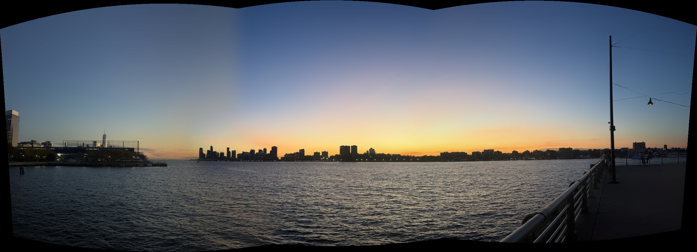
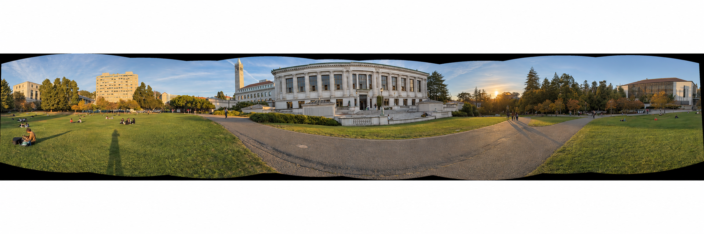

scene 1


H1 =
2.849990−0.09312449−905.4851
0.79496512.417443−460.1626
0.002906509−9.836168e−61

Three overlapping photo pairs shot with a fixed center of projection and ~50% overlap. In each scene, the left image is warped into the perspective of the right reference image.


To compute the 3×3 homography H (fixing h33 = 1), I clicked 12 point correspondences for scenes 1 and 3, and 13 for the updated scene 2. Each match gives two linear equations:
x h11 + y h12 + h13 − ux h31 − uy h32 = u
x h21 + y h22 + h23 − vx h31 − vy h32 = v
Stacking N point pairs gives a 2N×8 system Ah = b, solved via least-squares (np.linalg.lstsq). The recovered homography matrices:
H1 =


H2 =


H3 =
To avoid holes from forward projection, I used inverse warping with H−1 across the transformed bounding box.
psource ∝ H−1 ptarget
I implemented both interpolation methods from scratch: nearest neighbor rounds to the nearest integer pixel, while bilinear computes a weighted average of the 4 neighboring pixels.


| interpolation | time | trade-off |
|---|---|---|
| nearest neighbor | 2.281 s | one pixel sample; more jagged edges |
| bilinear | 4.209 s | four weighted samples; smoother, slightly softer detail |
Bilinear takes ~1.85× longer (~4.2s vs ~2.3s) but significantly reduces pixelated edges along diagonal lines.
Rectifying the angled Crumbl box by mapping its four corners to a 500×300 rectangle. Bilinear interpolation leaves much smoother boundaries along the box opening.


Rectifying a Monster book cover to a 500×300 rectangle. Bilinear interpolation keeps the title typography smooth without staircasing.


I warped image 1 into image 2's frame and placed them on a shared canvas offset to (0, 0).
To avoid harsh seam lines, I used distance feathering where weights taper linearly toward image edges, normalized by the sum of valid weights:
Imosaic = (w1 I1 + w2 I2) / (w1 + w2)


Feathering softens brightness transitions, but it does not correct geometric misalignment or moving subjects. The updated clothing-store pair still has visible ghosting near the racks and people.
For automatic stitching, I replace manually clicked points with detected features. I use the supplied Harris detector at a single scale, discarding a 20-pixel border. The storefront pair contains 7,035 corners in the source view and 6,569 in the reference.
Adaptive Non-Maximal Suppression (ANMS) measures each corner’s distance to its nearest sufficiently stronger neighbor, with crobust = 0.9. I keep the 500 largest suppression radii per image. Compared with the dense Harris output, these points cover the scene more evenly instead of clustering on textured regions.


I blur each grayscale image with a Gaussian filter (σ = 2). Around every selected corner, I take a 40×40 window and sample every fifth pixel, starting at offset 2, to form an axis-aligned 8×8 descriptor. Subtracting its mean and dividing by its standard deviation reduces sensitivity to brightness and contrast changes.
d = (p − μ(p)) / (σ(p) + 10−8)


Each image produces 500 descriptors, each with 64 values. These ten examples show the coarse intensity patterns used for matching; no rotation alignment is applied.
For each source descriptor, I compute Euclidean distances to the reference descriptors. A match is accepted when the closest distance divided by the second-closest distance is below 0.7. This ratio test rejects descriptors with several similarly good candidates.
The storefront pair retains 61 tentative matches. Most lines connect the shared building, but appearance alone still allows incorrect correspondences, which are handled by RANSAC next.

I implemented 4-point RANSAC from scratch. Each of 2,000 trials samples four matches, estimates a homography with computeH, and projects all source points into the reference image. Matches with reprojection error below 3 pixels are counted as inliers. I keep the largest consensus set and refit H using all its inliers.
The final homography feeds the same inverse warping and feather blending used in Part A. Below, each manual result uses clicked correspondences, while each automatic result uses matched features and RANSAC.

RANSAC retains 51 of 61 matches. Both mosaics align the main storefront, although the automatic estimate changes the outer perspective and stretches the left edge more. Small alignment differences remain near the overlap.


The automatic result has a different perspective from the manual estimate, with visible ghosting around clothing racks and people. The small RANSAC consensus makes this estimate less reliable than the other examples.

RANSAC retains 30 of 64 matches. The railing and atrium structure are broadly aligned in both results. People and nearby objects show duplicated edges, consistent with motion, parallax, and residual geometric error that feather blending cannot remove.

